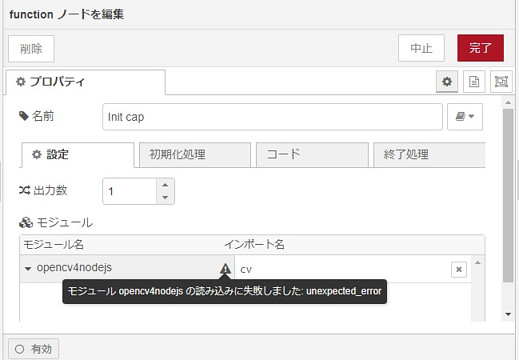

Node-REDで画像処理(opencv4nodejs) その1でインストールした「opencv4nodejs」をNode-REDで使う方法を説明します。
Node-REDのバージョン1.3以降の「Functionノードにおける外部npmモジュールの簡単に利用できる」機能を使えば、「opencv4nodejs」も簡単に使えそうですが、2021/8時点ではうまくいきませんでした。

仕方ないので従来の方法を使います。
従来の外部モジュールの利用方法
C:\Users\[YOUR ACCOUNT]\.node-red\settings.jsを以下のように編集します。
/** Allow the Function node to load additional npm modules directly */
functionExternalModules: false,
/** The following property can be used to set predefined values in Global Context.
* This allows extra node modules to be made available with in Function node.
* For example, the following:
* functionGlobalContext: { os:require('os') }
* will allow the `os` module to be accessed in a Function node using:
* global.get("os")
*/
functionGlobalContext: {
// os:require('os'),
cv:require('opencv4nodejs')
},「functionExternalModules」をfalseにして、「cv:require('opencv4nodejs')」を追加します。
この後、Node-REDを再起動してください。
Node-REDの「Function」ノード上で以下のようにすれば、OpenCVの関数を使うことができます。
const cv = global.get("cv");USBカメラの画像を表示してみます
USBカメラを1台つなげます。ノートPCなどカメラがついているものは不要です。
Node-REDを起動します。
右上の マークをクリックし、「パレットの管理」を選択してください。「node-red-contrib-image-output」がインストールされていなければ、「ノードを追加」⇒「ノードを検索」⇒「node-red-contrib-image-output」で追加してください。
「npm install ～」と違い、Node-REDを再起動する必要はありません。
ノードを以下のように配置します。
- ①「inject」ノード
- 「Node-REDの起動後の0.1秒後、以下を行う」のチェックボックスをONにして、起動後に1回だけ実行するようにします。
- ②「Function」ノード
const cv = global.get("cv");でOpenCVを使えるようにして、VideoCaptureクラスを初期化します。作成したオブジェクト（cap）をグローバル変数にセットし、他のノードで使えるようにします。撮像するたびにVideoCaptureクラスを初期化すると時間がかかります。時間短縮のための工夫です。- ③「Debug」ノード
- 一応、初期化したことを表示します。
- ④ 「inject」ノード
- 配置しただけ、ただのトリガーです。
- ⑤「Function」ノード
- cv（OpenCV）とcap（VideoCaptureクラス）を使えるようにします。
const image = cap.read();で撮像し、後は「image」ノードで表示できるように変換します。今回はバッファに変換しました。（参照ページ） - ⑥「image」ノード
- 配置しただけです。
配置と接続が終了したら、「デプロイ」ボタンを押します。

正常動作すると、「デバッグ」に以下のように表示されます。
④実行のボタンを押すと、「image」ノードの下に画像が表示されます。
以下はフローをJSON形式で書き出したものです。以下をコピーして、Node-REDの右上の マークをクリックし、 「読み込み」で開いたテキストボックスにペーストしてください。上のフローを読み込むことができます。
[
{
"id": "c98540bb293ace80",
"type": "inject",
"z": "bd33bcab6871647c",
"name": "初期化",
"props": [
{
"p": "payload"
},
{
"p": "topic",
"vt": "str"
}
],
"repeat": "",
"crontab": "",
"once": true,
"onceDelay": 0.1,
"topic": "",
"payloadType": "date",
"x": 140,
"y": 80,
"wires": [
[
"304436470ce4770d"
]
]
},
{
"id": "304436470ce4770d",
"type": "function",
"z": "bd33bcab6871647c",
"name": "Init VideoCapture",
"func": "const cv = global.get(\"cv\");\n\nconst cap = new cv.VideoCapture(0);\n\nglobal.set(\"cap\", cap);\n\nmsg.payload = \"VideoCaptureの初期化 \";\n\nreturn msg;",
"outputs": 1,
"noerr": 0,
"initialize": "",
"finalize": "",
"libs": [],
"x": 330,
"y": 80,
"wires": [
[
"de1dae70b6eb899b"
]
]
},
{
"id": "de1dae70b6eb899b",
"type": "debug",
"z": "bd33bcab6871647c",
"name": "",
"active": true,
"tosidebar": true,
"console": false,
"tostatus": false,
"complete": "payload",
"targetType": "msg",
"statusVal": "",
"statusType": "auto",
"x": 530,
"y": 80,
"wires": []
},
{
"id": "6551da61e8db9eba",
"type": "inject",
"z": "bd33bcab6871647c",
"name": "実行",
"props": [
{
"p": "payload"
},
{
"p": "topic",
"vt": "str"
}
],
"repeat": "",
"crontab": "",
"once": false,
"onceDelay": 0.1,
"topic": "",
"payloadType": "date",
"x": 150,
"y": 140,
"wires": [
[
"baeb172d1fd5e141"
]
]
},
{
"id": "baeb172d1fd5e141",
"type": "function",
"z": "bd33bcab6871647c",
"name": "grab",
"func": "const cv = global.get(\"cv\");\nconst cap = global.get(\"cap\")\n\nlet image = cap.read();\n//image = image.blur(new cv.Size(3, 3)).canny(30,60);\nconst str = cv.imencode('.jpg', image).toString('base64');\nmsg.payload = Buffer.from(str, 'base64');\n\nreturn msg;",
"outputs": 1,
"noerr": 0,
"initialize": "",
"finalize": "",
"libs": [],
"x": 290,
"y": 140,
"wires": [
[
"3245c954feda7937"
]
]
},
{
"id": "3245c954feda7937",
"type": "image",
"z": "bd33bcab6871647c",
"name": "",
"width": 160,
"data": "payload",
"dataType": "msg",
"thumbnail": false,
"active": true,
"pass": false,
"outputs": 0,
"x": 460,
"y": 140,
"wires": []
}
]Node-REDはいろいろなセンサーと連携できることをセールスポイントにしていますが、USBカメラとの連携ができる使い勝手の良いノードが見当たらなかったので感動です。HDの解像度を超えるカメラから撮像することが可能です。
何だか画像処理という感じがしませんので、5行目にボカシ->Canny法によるエッジ抽出を入れておきます。コメントを外して試してください。メソッドチェーンも使えますね。